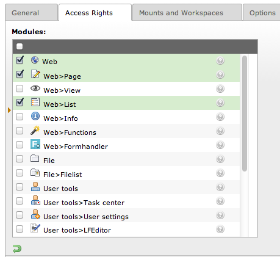

Story #55814
Epic #55813: Access Control Lists
Access restriction for modules
| Status: | Closed | Start date: | 2014-02-09 | |
|---|---|---|---|---|
| Priority: | Should have | Due date: | ||
| Assigned To: | - | % Done: | 0% |
|
| Category: | - | Spent time: | - | |
| Target version: | - | |||
| Story points | - | |||
| Velocity based estimate | - |
Description
Currently it's possible to bind a Neos module to a resource via Settings.yaml:
1TYPO3: 2 Neos: 3 modules: 4 management: 5 label: 'Management' 6 # ... 7 resource: 'TYPO3_Neos_Backend_Module_Management' 8 submodules: 9 workspaces: 10 label: 'Workspaces' 11 # ... 12 resource: 'TYPO3_Neos_Backend_Module_Management_Workspaces'
This already allows the integrator to hide modules from certain roles. But the current implementation lacks some features:
- The access restriction is not configurable over the browser
- Only the complete module can be bound to resources, a more fine-grained ACL would be useful (e.g. allow role x to view the user module but only to manage roles y and z).
TYPO3 CMS¶
In TYPO3 CMS the access control for modules is quite basic:

+ Easy to use
- Not fine grained (only complete modules can be included/excluded)
- The parent module has to be included manually (allowing only "Web>Page" does not work, "Web" needs to be included as well)
{kind=link}
History
#1 Updated by Rens Admiraal over 1 year ago
I discussed this with Christopher on the codesprint, we came to the conclusion that the current role implementation is insufficient (as said with 'not configurable in browser').
If we would somehow try to use the current security framework it would also be really heavy, and regenerating the proxy classes would be a big issue (which would be required if we change the content of the Policy.yaml).
Idea: add something on top which can be used to define functional roles / policies. This way the policies in Policy.yaml define the basic roles known in the package, more functional roles like "limit access to resources with extension .swf" could then be defined differently. And for those 'functional roles' counts: they can be site specific.
#2 Updated by Bastian Waidelich over 1 year ago
- Status changed from New to Closed